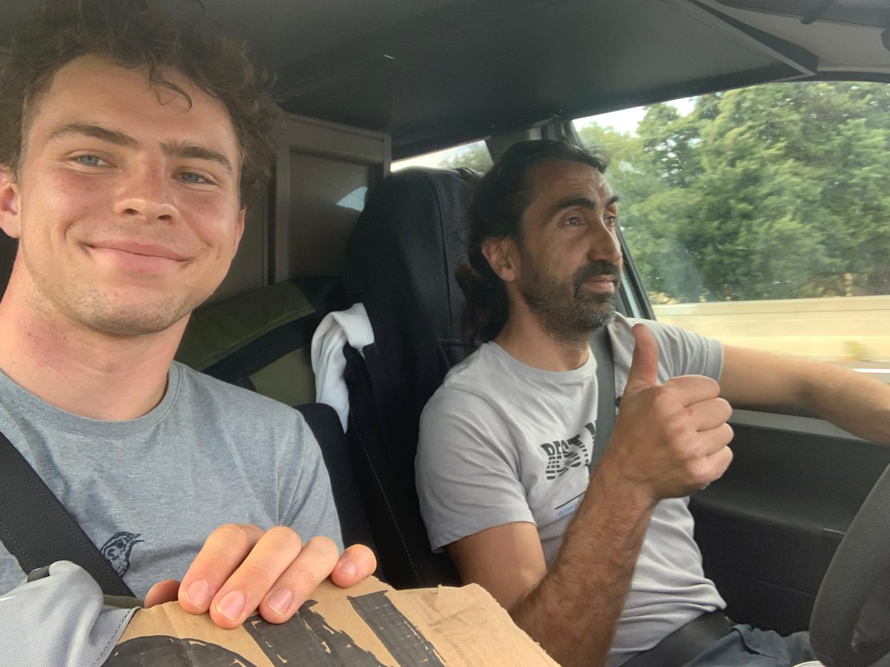
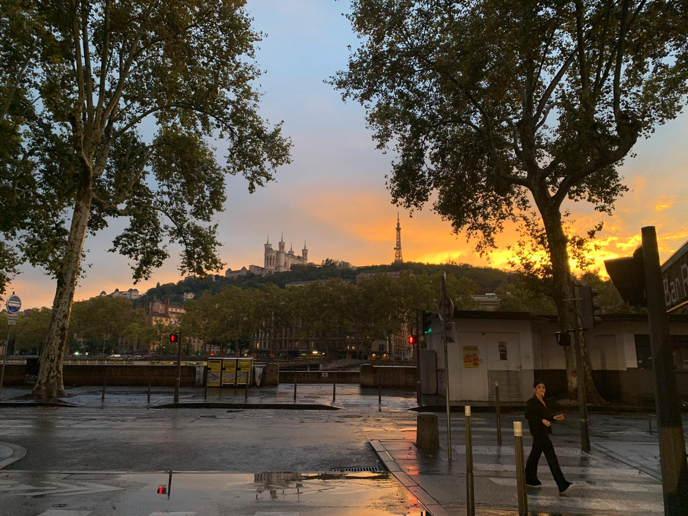

Hitchhiking, or meeting new people.
I spent a night in a Perpignan AirBnB. In the morning, I went out to buy something for breakfast and then walk to the highway. It was quite a distance away, so I prepared myself for a good hike. Not only five minutes after starting to walk, a man stopped next to me, and asked where I was going to. "North, probably Lyon.", I responded. He just opened the door and motioned me to get in. He took me to the closest Péage. The day started out well.
The Péage, however, was a false positive. There were many cars, but most of them went in the opposite direction, to the south. I decided to go to the other side of the highway, crossing a little bridge and jumping the fence. A very motivated 1.5 hours later, an angel arrived.
 Me and Goran.
Me and Goran.
The Angel's name is Goran. He full-stopped his lorry in 150 meters, going from 90km/h to 0 in a manner of seconds. I put the backpack on my back and started running towards the gigantic vehicle, not comprehending my luck. "I have never passed a hitchhiker.", he later told me over and over. "I have this saying: When you help other people, other people will help you. I never want the people I help to pay me. I want them to help others, so that we can spread this love."
Goran is Serbian, but has been living in Slovenia since 2015. Mostly because of the better economic situation. He once picked up a couple in Croatia, when returning from a trip in his car. After they explained him their difficult situation, he drove over 1000 kilometers to Italy and back to Serbia again. Just to help them. He never accepted any form of payment.
What astouned me the most, though, was the wildly different political views he had. I was amazed at how someone (the media tells me I shouldn't be agreeing with) could be such a nice person.
I travelled with him for around two hours, before he let me out at the last gas station before the highway turned in the direction of Lyon. After standing at the exit for some minutes, a man approached me with a deal: "I have to go to Montpellier and get a load of furniture in this little car. I can take you with me, you help me put it in the car, and if we still have room, you come to Lyon with me. Else, I'll leave you with 10 euros in Montpellier. What do you say?" Obviously, I accepted.
 Me and The Portuguese Guy.
I must say, I got to know so many people on this trip, the names do not want to stay in the library of my mind. This guy, half Portuguese, grew up in Lyon. We had a hell of a time, speaking about his origin and French politics.
On the way to Lyon I went on Trustroots.org and searched for a place to spend the night. Before arriving, I got a message. Bodo Wilhelm, a German, had accepted my request to spend a night on his couch. We went out for a beer with his friend and they even invited me to stay a night longer. The next day his friend Arthur showed me Lyon and we walked through secret tunnels. It was very fun :) In the afternoon we played a card game called Munchkin. In the evening I decided to get a bike and cruise to the Cathedral towering over Lyon. The sunset was beautiful.
 The cathedral over Lyon.